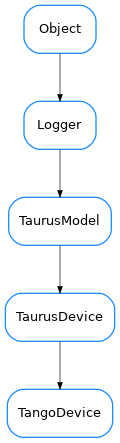

TangoDevice¶

-
class
TangoDevice(name, **kw)[source]¶ Bases:
taurus.core.taurusdevice.TaurusDeviceA Device object representing an abstraction of the PyTango.DeviceProxy object in the taurus.core.tango scheme
-
description¶
-
getDescription(*args, **kwargs)¶ Deprecated since version 4.0: Use .description instead
-
getDisplayValue(*args, **kwargs)¶ Deprecated since version 4.0: Use .state().name instead
-
getHWObj(*args, **kwargs)¶ Deprecated since version 4.0: Use getDeviceProxy() instead
-
getSWState(*args, **kwargs)¶ Deprecated since version 4.0: Use state instead
-
getState(*args, **kwargs)¶ Deprecated since version 4.0: Use .stateObj.read().rvalue [Tango] or .state [agnostic] instead
-
getStateObj(*args, **kwargs)¶ Deprecated since version 4.0: Use .stateObj [Tango] or .factory.getAttribute(state_full_name) [agnostic] instead
-
getValueObj(*args, **kwargs)¶ - Deprecated by TEP14.
- ..warning::
- this bck-compat implementation is not perfect because the rvalue of the returned TangoAttributeValue is now a member of TaurusDevState instead of TaurusSWDevState
Deprecated since version 4.0: Use state [agnostic] or stateObj.read [Tango] instead
-
isValidDev(*args, **kwargs)¶ see:
TaurusDevice.isValid()Deprecated since version 4.0: Use getDeviceProxy() is not None instead
-
poll(attrs, asynch=False, req_id=None)[source]¶ optimized by reading of multiple attributes in one go
-
state¶ Reimplemented from
TaurusDeviceto use Tango’s state attribute for diagnosis of the current state. It supports a “cache” kwargParameters: cache ( bool) – If True (default), cache will be used when reading the state attribute of this deviceReturn type: TaurusDevStateReturns:
-
stateObj¶
-